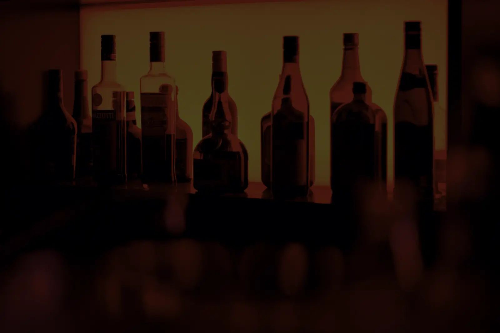
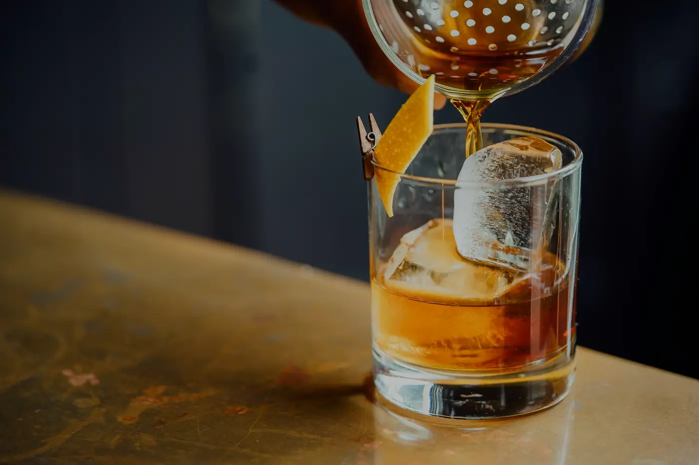
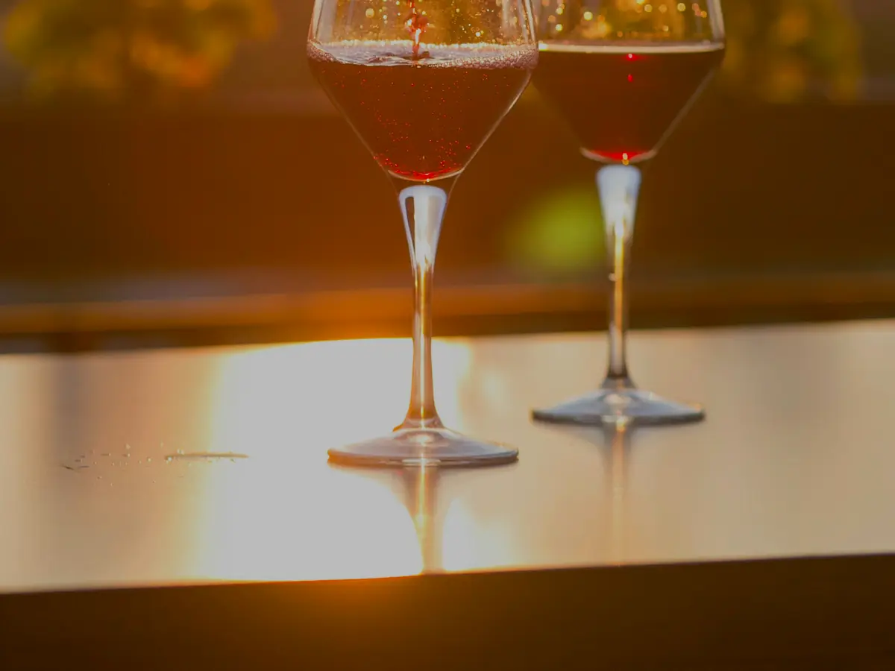
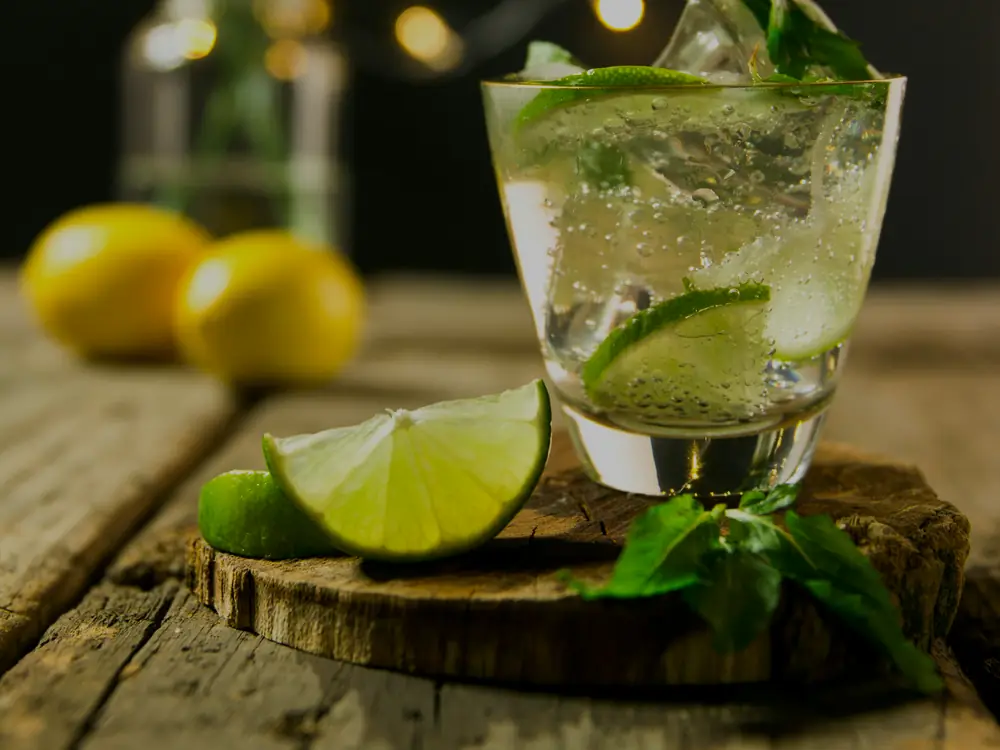
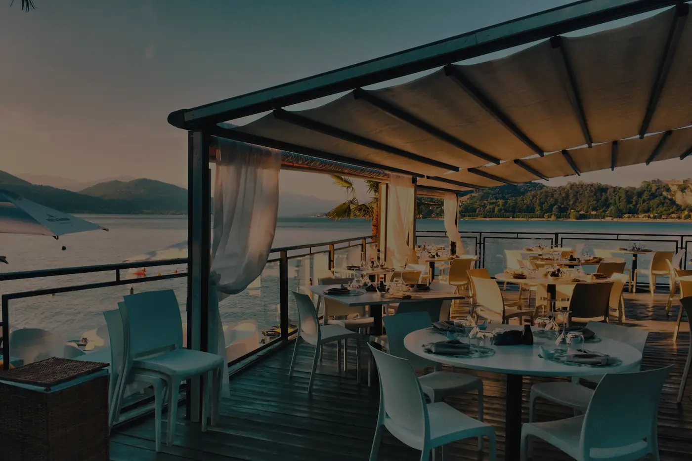

Pub · Almerimar · frente al puerto
Las noches que no se olvidan.
Música, copas y momentos frente al mar. Donde empieza la noche en Almerimar y el verano nunca termina del todo.
Ver la cartaCapítulo I — La llegada
No es solo un sitio para tomar algo. Es el lugar donde la noche se vuelve recuerdo y la música escribe el resto.
Entre el rumor del puerto y la última luz del día, La Chica de Ayer abre sus puertas a las tardes que se alargan, a las copas que saben mejor con buena compañía y a esas canciones que parecen escritas para esta misma noche.
Capítulo II — La experiencia
Luz cálida, voces, hielo y ritmo.




Capítulo III — Música & ambiente
Suena
como antes.
Del vinilo a la madrugada. Sonidos que reconoces a la primera nota y otros que descubrirás esta noche. La música no acompaña: dirige. Y aquí, manda hasta el último compás.
Capítulo IV — Lifestyle mediterráneo
El verano sabe mejor frente al mar.
Almerimar al caer la tarde: la brisa del puerto, los barcos en calma y esa sensación de que la noche acaba de empezar. La Chica de Ayer es el punto donde se reúnen los que no quieren que el día termine.
- 18:00
- Empieza el tardeo
- 03:00
- No mira el reloj
- ∞
- Noches por vivir
Las noches
de la semana.
Capítulo V — Agenda
-
Jue
Tardeo de Apertura
Sunset, copas suaves y la mejor música para empezar el finde.
-
Vie
Sesión Vinilo
Clásicos que no caducan. Del soul al indie, sin saltar ni una.
-
Sáb
DJ en directo
La noche grande. Ritmo, luces cálidas y baile hasta el cierre.
-
Dom
Cierre de Verano
Copa lenta, conversación larga y la mejor manera de despedir el finde.
Capítulo VI — La carta
Lo que se sirve aquí.
Producto honesto, hielo bueno y tiempo. Coctelería de autor, clásicos sin atajos, vinos del sur y cocina corta para acompañar. Cambia con la temporada; siempre hay una copa esperándote.
Producto de la tierra · Cítricos exprimidos al momento · Hielo de calidad · Rotación por temporada
Precios con IVA incluido. La carta rota con la temporada, así que alguna copa puede cambiar de nombre antes de que vuelvas.
¿Alergias o intolerancias? Dínoslo al pedir y adaptamos la copa o el plato. Tenemos la información de alérgenos disponible en barra.
El final es solo el principio
Nos vemos
este finde.
C. Draga, 37 · Almerimar, Almería. Frente al puerto. La noche ya tiene tu nombre.
Capítulo VII — Encuéntranos
Frente al puerto.
-
Dirección
C. Draga, 37
04711 Almerimar · El Ejido
Almería, España -
Horario
Jueves a domingo
18:00 — 03:00
Lunes a miércoles, cerrado
Antes de venir
Preguntas frecuentes.
¿Dónde está La Chica de Ayer en Almerimar?
Estamos en la C. Draga, 37, 04711 Almerimar (El Ejido, Almería), a pie de puerto deportivo y a un par de minutos andando desde el paseo marítimo.
¿Qué horario tiene el pub?
Abrimos de jueves a domingo, de 18:00 a 03:00. El tardeo empieza a las 18:00 y la música se alarga hasta el cierre.
¿Hace falta reservar mesa?
No es obligatorio. En verano y los fines de semana el local se llena pronto, sobre todo la terraza, así que conviene venir con tiempo.
¿Se puede celebrar un cumpleaños o un evento privado?
Sí. Organizamos cumpleaños, despedidas y eventos privados adaptando música, carta y espacio. Consúltalo en barra y lo preparamos contigo.
¿Hay terraza y se puede ir con niños?
Tenemos terraza frente al puerto. Durante el tardeo, hasta las 21:00, el ambiente es familiar; a partir de esa hora el local es de ocio nocturno para mayores de 18 años.